Collision (.kcl)
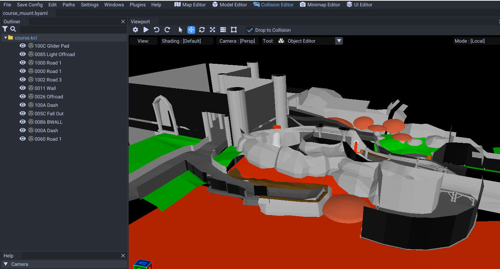
The kcl file is what represents the map collison. This is what makes the karts stay on the ground. This file can control a variety of things (like falling into water, activating a glider, floor sound/particles)
To start you want to get your map model in your 3D program of choice.
Preparing Model
For this guide I will be using blender.
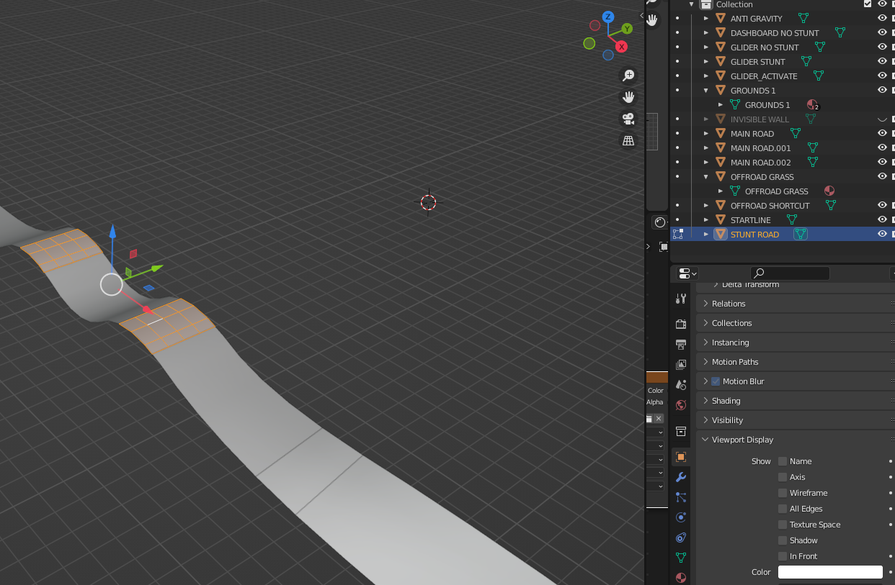
Make sure you divide your model based on what collision types you want by either meshes or materials.
This can include roads, walls grass, sand, offroad, dash panels, slippery roads, etc.
It is very important both the roads and walls are seperated.
Glider Usage
If you need a glider, make sure you have a small plane above it like this as a seperate mesh or material.
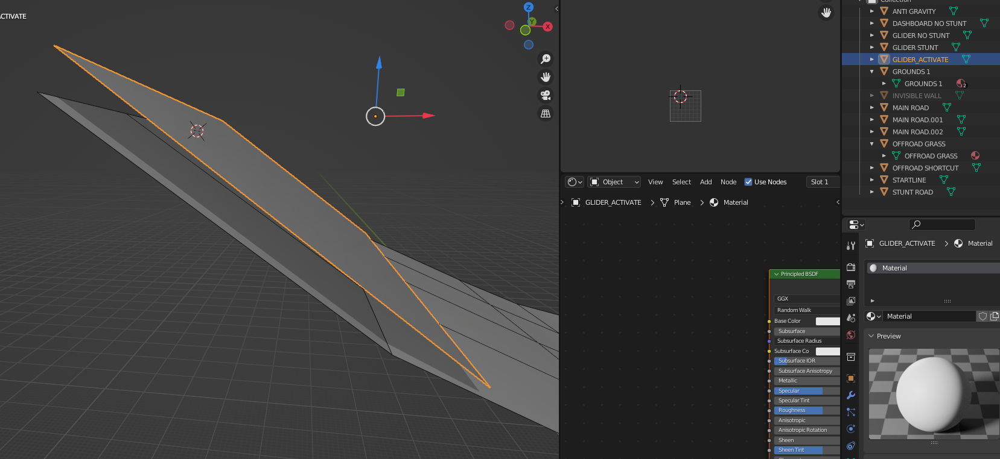
This will activate gliding when the player touches it and a glider path is nearby.
Importing
Export your model as .obj.
Right click on the .kcl and click on "Replace".
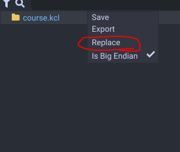
Material Selector
Select how you want to assign materials (mesh or materials from .obj)
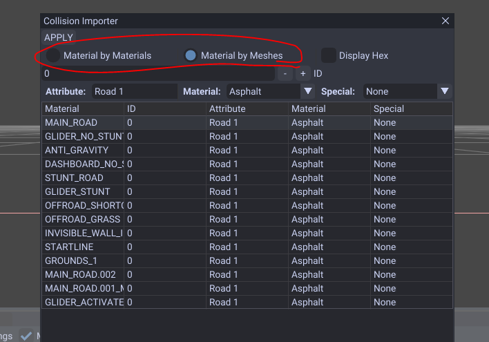
Then assign your materials from the attribute drop down.
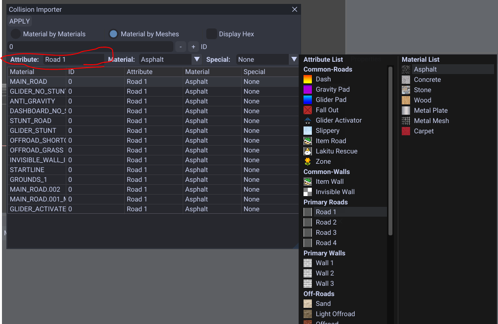
It is very important you assign your walls to a wall type so you cannot drive on them.
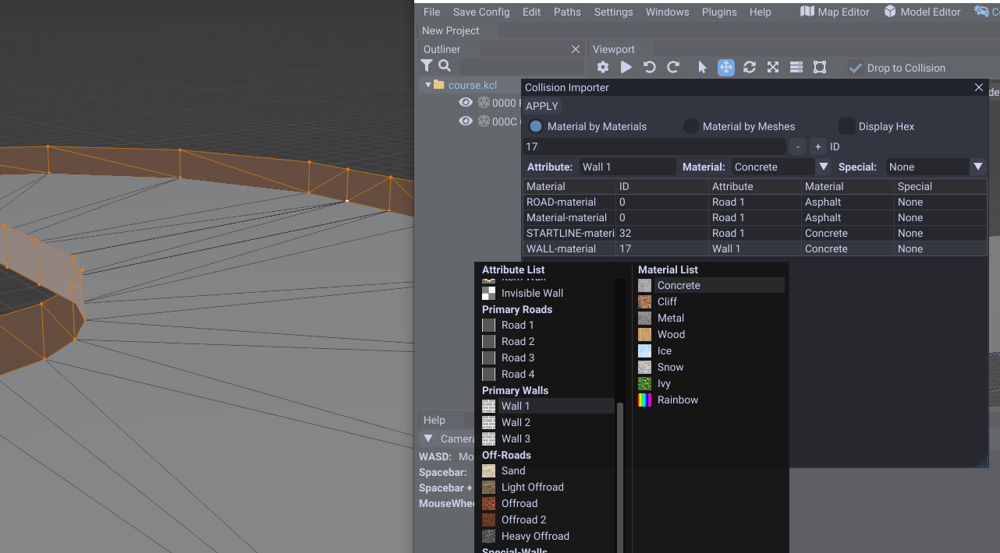
This dropdown includes materials aswell on the right side.
| Name | Effect |
|---|---|
| Road 1 - 4 | Normal road types with 8 different materials |
| Wall 1 - 3 | Normal wall types with 8 different materials |
| Dash | Gives you a boost |
| Gravity Pad | Collision used for gravity panel sounds/effects |
| Glider Pad | Collision used for glider panel sounds/effects |
| Fall Out | Water/Lava/Void from falling out of the map |
| Glider Activator | Activates gliding from a plane hovering over the panel |
| Slippery | Makes the road slippery |
| Item Road | Only items can pass through |
| Item Wall | Only items can pass through |
| Invisible Wall | Has no particles or sound when hit. Only use this for out of bounds areas not intented to be hit |
Offroad types are next and includes sand, snow, carpet, dirt, etc. These are ordered from slow to slowest.
| Name | Effect |
|---|---|
| Sand | Slow movement. |
| Light Offroad | Slower movement |
| Offroad 1 - 2 | Slower movement with more materials to use. |
| Heavy Offroad | Slowest road movement. |
Next is the special types.
| Name | Effect |
|---|---|
| LWALL | Unknown effect. |
| BWALL | Unknown effect. |
| Pull | Usually used for pull areas like rivers (still need to use pull paths to move players) |
| Moving Terrain | Unused? |
| Effect Trigger | Triggers effects somehow. |
| Sounds Trigger | Triggers sounds somehow. |
| Dummy2 | Empty unsolid. |
| Dummy3 | Empty unsolid. |
Stunts/Tricks & High Gravity
You can select special types on the left side which includes tricking on the collision as well as high gravity.
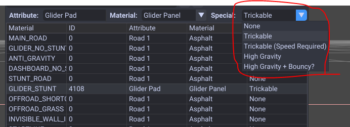
High gravity is useful when you are going down a steep hill and you don't want to fly off it.
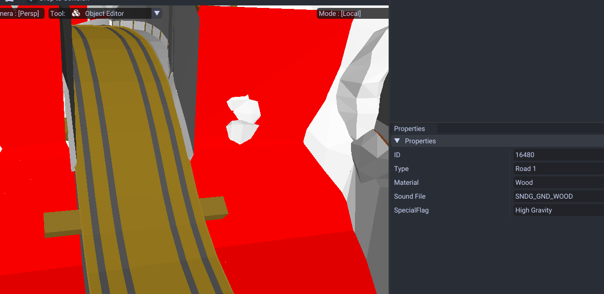
For example Wario's Goldmine uses this during some slopes.
Apply
Once finished click the apply button.
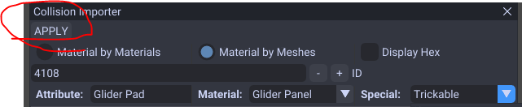
Save your collision by right clicking on the kcl and selecting Save or CTRL + S.
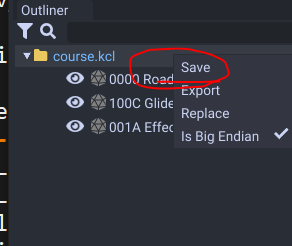
Keeping Materials From 3D Program
If you want to import your model various times you can rename your meshes or materials based on the material type to use.
Make them COL_## with the ## being your material ID in hex. When you reimport your model it'll automatically select it.
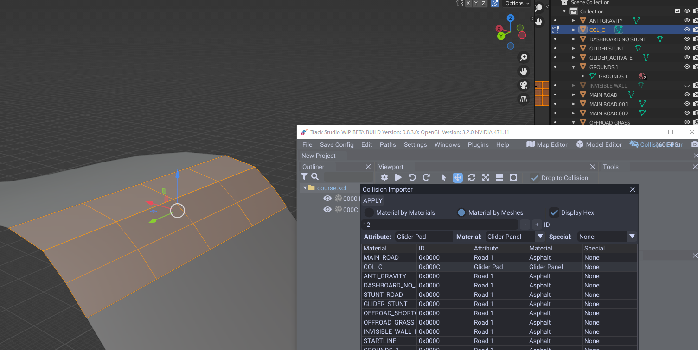
Note how the selected mesh is COL_C, The ID shown in that list is 0x000C.